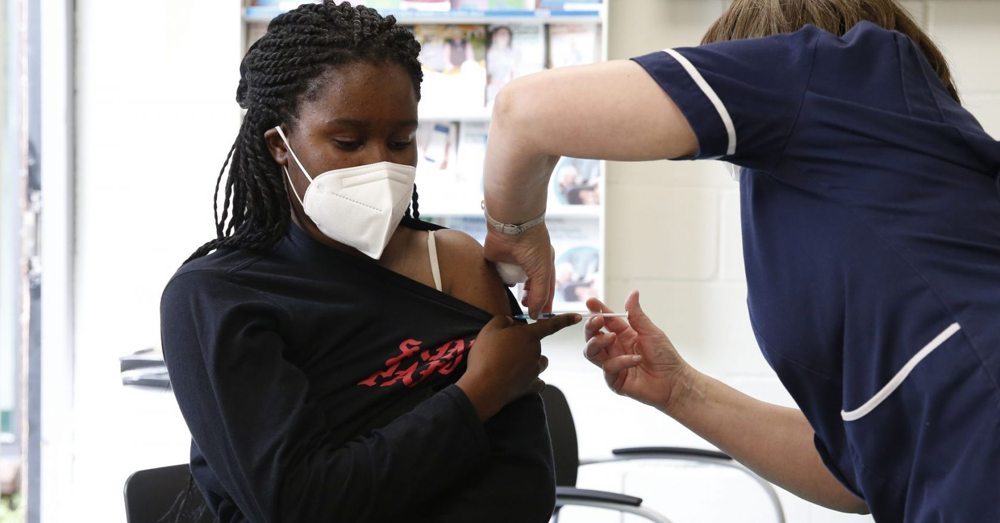
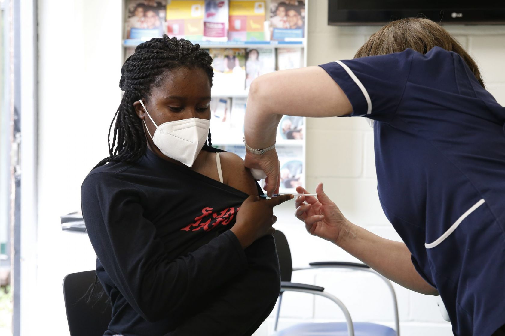

The Covid-19 vaccine and periods: we get to the bottom of all the questions on social media
Sore muscles, tiredness, headaches and nausea are all possible side effects of the Covid-19 vaccinations that most of us are aware of.But what about how it affects your menstrual cycle?
The Sunday Times reported that the Medicines Healthcare products Regulatory Agency (MHRA) had 2,734 reports after women had received the AstraZeneca vaccine, 1,158 related to the Pfizer jab, and 66 linked to the Moderna vaccine, as of 17 May.
But there’s still a frustrating lack of information on the NHS list of side effects, so when an academic and immunologist took it into her own hands to address concerns raised about Covid-19 vaccinations, periods and fertility, it went viral.
'A lot of people have approached me with questions about whether Covid vaccinations might affect fertility,' explains the author of the widely shared Twitter thread, Dr Victoria Male, whose research at Imperial College focuses on how the immune system affects fertility and pregnancy.'As the vaccines were rolled out into younger age groups, people started to approach me saying that they had noticed changes to their period in the month that they got vaccinated.A lot of them wanted to know if this meant there would be a change to their fertility.'
If you’re worried, the short answer, according to Dr Male is that yes: the Covid-19 vaccination may affect your period in the short term, but no: it won’t affect fertility.In a thorough dissection of the topic, Dr Male points to decades of data on the HPV and flu vaccines - which have shown short-term effects on the menstrual cycle - yet also demonstrate that there is no harm to fertility.
She’s had a lot of people contacting her to tell her about their periods since the thread garnered such attention, Dr Male tells
Stylist .'I know that a lot of people are talking about this on other platforms too.I think the reason for this is that a lot of people have experienced a short-term change to their menstrual cycle around the time of vaccination and naturally they want to talk about it.'
'The majority of people who contact me about this aren’t worried, but they do want their experiences to be noted so that we know in the future if this is a common side effect that we should tell people about, the way we would now tell people that they might expect to have a bit of a temperature, for example.'
Indeed, it’s this desire to have experiences of women and others who menstruate made visible that inspired
The Sunday Times journalist, Rebecca Myers to also start her own Twitter thread on the subject.After having each of her doses of the Covid-19 vaccine, she experienced irregular bleeding but says it was the lack of information on the topic that fuelled her worries.She’s since built up a log of helpful articles, which she shared in her thread, as the Covid-19 vaccine roll out extends to those in their 20s.
Myers describes feeling angry that possible changes to the menstrual cycle following the vaccine were not listed in the official leaflet from the start.'It’s frustrating that, in 2021, we still have to discover these things for ourselves/via social media/googling/word of mouth,' she wrote.
Back in February, Dr Kate Clancy, an associate professor in anthropology at the University of Illinois, experienced a heavier than usual period a week and a half after having her first dose of the Moderna vaccine - when she asked others on Twitter whether they’d noticed a change, she received almost 900 responses.She’s now tracking experiences of vaccinated menstruators in what is now one of the biggest studies currently being run.
Hannah, 36 recalls having a 'fairly apocalyptic' period, in terms of volume, a couple of weeks after having her first dose of the Pfizer vaccine but says she didn’t really mind: 'I’m so happy to be 50% vaccinated and part of the solution.'Although, she does hope her menstrual cycle goes back to normal and has found seeking out information on the topic helpful.
Elena, 32, agrees: 'My period was a little bit late, which is not out of the ordinary for me, but it was so heavy.I’ve seen a lot of stuff on TikTok about the first period [after the Covid-19 vaccination] being really bad.'She does point out though, that due to other lifestyle changes, she doesn’t feel totally confident attributing this solely to the Covid-19 vaccine.As she says, so succinctly: 'I’d still prefer it to getting Covid.'
With so much misinformation and scare stories related to the Covid-19 vaccines abounding, medical experts are keen to strike the right line: women’s experiences are valid and should be shared but people shouldn’t panic.
'There have been a wide variety of reports, and this is one of the reasons that it has been difficult to say for sure whether these changes are definitely linked to the vaccine,' explains Dr Male.'So, for example, some people have reported a heavier period, some people a lighter one, a delayed one, or a missed one.But the two most commonly reported experiences are a heavier period or a late one.'
'It’s important to remember these side effects are mild and should not deter women from having the vaccine when they are called,' says Dr Pat O’Brien, Vice President at the Royal College of Obstetricians and Gynaecologists.He stresses that many women will experience a temporary change in their periods from time to time during their lives, and that right now, with so many in their 20s and 30s having the Covid vaccine, it seems inevitable that in some women these two events will coincide by chance.He also stresses that there is no evidence to suggest that Covid-19 vaccines will affect fertility.]
'All the reports on this have said that the change is only for one month, or occasionally two, so whatever you have experienced this month is unlikely to bother you in the long term'
If changes to the menstrual cycle do persist or if you note any new vaginal bleeding after the menopause, it’s advisable to see a doctor.Any concerns or possible side effects of the Covid-19 vaccine can also be reported on Yellow Card, a national reporting system for side effects.'At the moment, they say that the number of reports of changes to the menstrual cycle is in line with the normal rate at which these events occur, so this is still at the ‘keeping an eye on it’ stage,' explains Dr Male.'If more reports come in, they may decide that this is a side-effect that should go on the list, but it’s not there yet.'
For those worried, Dr Male has this advice: 'Don’t panic.All the reports on this have said that the change is only for one month, or occasionally two, so whatever you have experienced this month is unlikely to bother you in the long term.However, I would always advise anyone who suffers with their periods over many months to visit their GP, regardless of whether they think it is anything to do with the vaccine.Too many of us suffer with heavy or irregular periods when this is something that can be treated.'
Posted On: 2021-07-15T00:00:00
Posted By: Amy Sedghi


Content Date: 2021-07-15
Download Date: 2021-09-16
Document ID: L0C04G5DQ